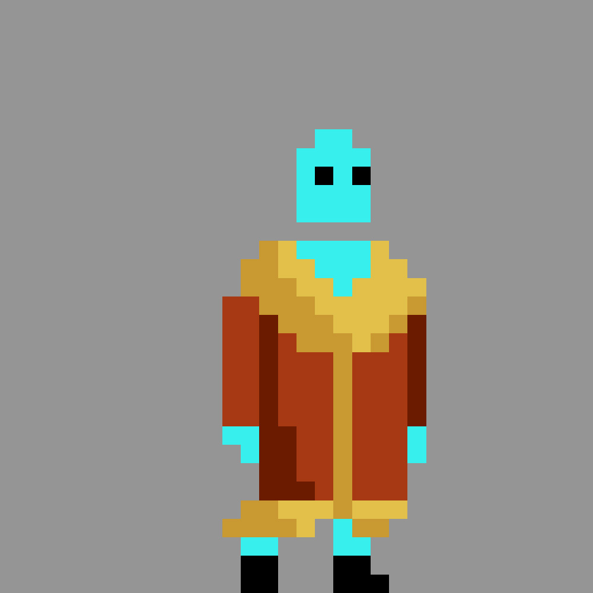
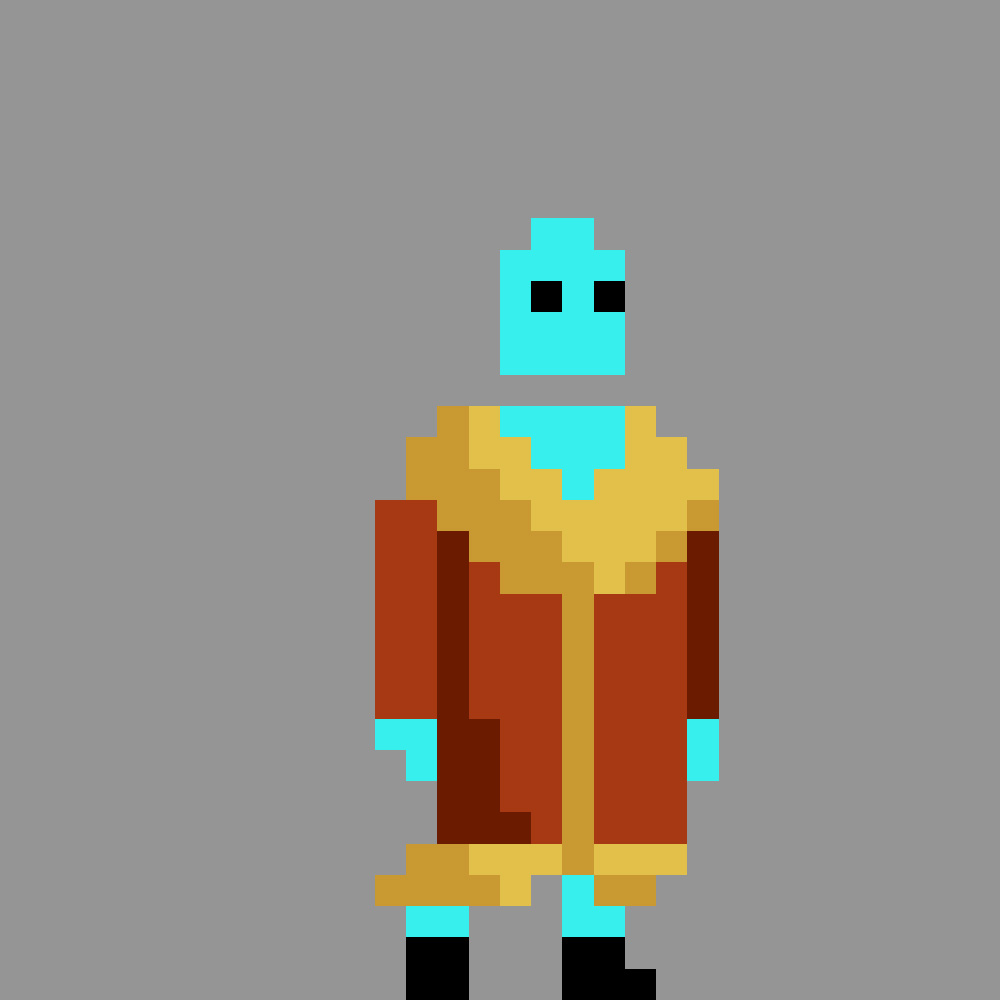

SOBRE
.png)
Olá, meu nome é Mayllon Diogo Ribeiro da Silva, tenho 21 anos e sou natural da cidade de Itajubá que está situado no sul de Minas Gerais. Sou filho de um pai pedreiro e mãe diarista. Vendo o empenho e dedicação dos dois sempre procurei me esforçar e dar o meu melhor. Sempre tive muito apoio dos meus pais para seguir a profissão. Eles acreditam que o conhecimento é a única coisa que ninguém pode tirar de nós e que a educação é a melhor herança que podem deixar. Por isso, sempre batalharam muito para nos garantir ensino de qualidade. Me formei no ensino médio no ano de 2019, sempre fui um aluno dedicado e com boas notas e apaixonado por história e ciências socias que me fez ter um pensamento crítico sobre a sociedade e afins. No meu tempo livre, gosto de assisti filmes e séries, mas o que me encanta mesmo é desenhar. Meus artistas favoritos são Charles Lavesso, Samuel Torres e Frida Kahlo. Desenho desde criança e na adolescência aprimorei minha técnica hoje em dia me considero profissional na área de realismo e aprendi tudo de forma autodidata.
PROGRAMAÇÃO
Conheci a programação assistindo vídeos no youtube e me interessei muito pela área, comecei a fazer um curso técnico na área no ano de 2021 na instituição Senac em minas unidade de Itajubá e estou com 70% do curso concluído. Já fizemos diversos projetos no curso e aprendemos a trabalhar em equipe, atualmente estamos fazendo um jogo com a ferramenta da Unity onde sou o coordenador de arte.
 



HABILIDADES
- üóø Pensamento critico
- üóø Comprometimento
- üóø Dedicado
- üóø Facilidade em aprender
- üóø Colabora√ß√£o em equipe
O QUE BUSCO
Busco uma vaga de estágio ou júnior, na área de front-end para adquirir experiencia me tornar um desenvolvedor e não descarto trabalhar em outras áreas de tecnologia como back-end, designer e banco de dados.